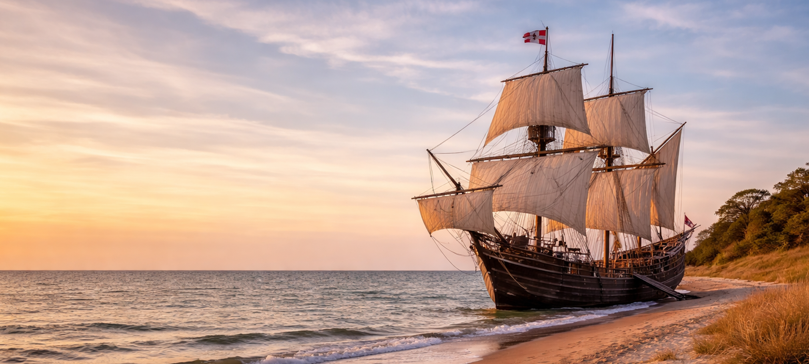

First Landing in Virginia
At 4:00 AM on April 26, 1607, three ships carrying 104 colonists arrived at Cape Henry, near modern-day Virginia Beach. These included Susan Constant, Godspeed, and Discovery, under the command of Captain Christopher Newport. These colonists established the first English colony in the “New World” which would lead to the rise of America.